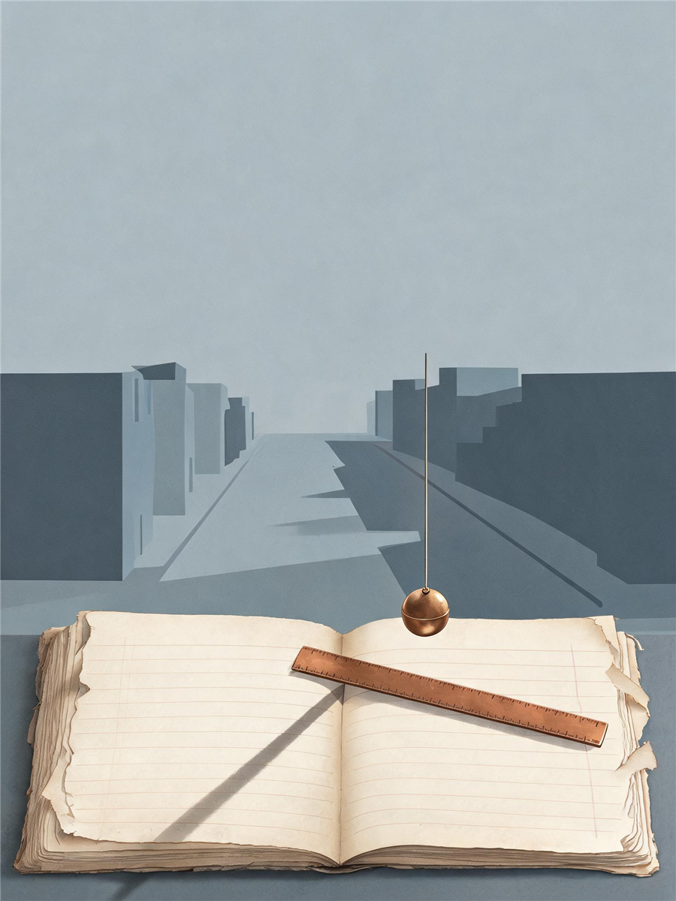

账本城
三章短篇 · 课堂虚构
账本城的人不用别的东西交换，只写条目：每写下一条，必须划掉另一条。每天只能写一条。写第二条，第一条就会消失。
周一清晨，东街记录员沈砚发现昨天最后一格空了。纸角只剩半个「桉」字。
三天之后，旧钟楼的钟响了一声。它只在有人做出不可撤回的选择时响。
第一章 · 空的一格
周一清晨，东街的长桌刚擦过，木纹里还留着水痕。沈砚把新的一页铺平，掏出铜尺，压在纸角上。
昨天的最后一格是空的。
他记得那一格本该有条目。不是忘了写，是写上去又不见了。纸面很平，没有划痕，没有墨。
「今天只能写一条。」他对自己说。
长桌另一头有人把笔放下。笔杆碰到桌面，声音很轻，顺着水痕滑到尽头。
桌子从上往下坐了十几个人，袖子都卷到肘上。有人写完了，正用手指把墨吹干。吹干之后，那一格就算落定。
沈砚把铜尺挪开一寸。纸角翘起来，露出下面压着的一小片旧纸。边缘毛糙，是从别的账册上撕下来的。
上面只剩半个字。
「桉。」
他把那片纸捏起来，对着窗口的光看。木字旁被撕走了，只剩下半个「安」。
他读了三种读法，都读不出第二个字。
对面的人抬起头。
「沈记录员，今天还换页吗？」
「换。」他把铜尺压回原处，「先让我把这一条写完。」
他写完最后一笔，才把旧纸折了两折，放进袖口。
钟楼那边没有声音。这个时辰也不该有声音。
走到钟楼街，影子从钟座底下伸出来，比昨天长。钟叔在楼下擦钟，手套裹着抹布，一下，一下，擦得很慢。
钟座下面摆着一张小凳。凳面上有一圈磨白的印子，是手套擦出来的。
「钟叔。」
「嗯。」
「钟停多久了？」
「从上一页开始。」钟叔没抬头。
「停的原因呢？」
「你要问原因，我给不了。你要问时间，周五傍晚。」
沈砚抬头看钟面。指针停在一个位置上，正是傍晚的刻度。
「周五傍晚。」
「周五傍晚。」钟叔把抹布叠成小方块，「你还有事。」
「昨天的最后一格空了。」
手套停了半拍。
「格子会空。」钟叔说，「人也会。」
他没有再问。走过钟楼街的尽头，纸街的墙上是层层旧纸，风一过就响。纸街的桌子都是矮的，人要坐着写，写完再把纸举起来对光。
阿桉坐在最里面那张矮桌前，浅色围裙，手指上有纸痕。
「抄写员。」
「记录员。」她抬起头，说得慢，「东街的账册，一天只换一次页。」
「昨天有人动过我的账册。」
「动过。」她把手里的笔尖在纸上点了两下，「动过，不等于我抄的是你的。」
「那你抄的是谁的？」
「这个不能说。」她把笔帽盖上，「说了，就等于承认我动过别人的账册。」
沈砚把袖口里的旧纸取出来，放在桌上。
阿桉看了一眼，手指停住。她没有伸手，围裙口袋却鼓着一小块，露出的纸边毛糙，撕口不平。
「这纸是从哪本账册上撕下来的？」
「不知道。」
「你口袋里那张，边是新的。」
阿桉低下头，把桌角的裁纸刀挪了挪。
「周一傍晚了。」她站起来，「纸街要收摊。」
沈砚没有拦她。他把旧纸收回袖口，铜尺压在掌心，凉的。
走出纸街，他回头看了一眼。阿桉站在桌边，手按在围裙口袋上，没有动。
本章状态登记表
| 人物 | 章末位置 | 随身道具 | 时间点 |
| 沈砚 | 纸街矮桌前 | 铜尺（袖口）、半字旧纸（袖口） | 周一傍晚 |
| 阿桉 | 纸街，起身收摊 | 纸角（围裙口袋）、账册 | 周一傍晚 |
| 钟叔 | 旧钟楼楼下 | 手套（湿） | 周一下午 |
| 小满 | 未出场（寄存处） | 布包 | 周一 |
字数：843 字（不含标点；含标点 1042 字符）。
第二章 · 抄写员的一页
周四上午，纸街的门板一块块卸下来，靠墙立着，像一排没写完的字。沈砚从东街过来，袖口里只有铜尺。
阿桉坐在最里面那张矮桌前。他往纸街深处走，在她桌前停下。
「昨天的最后一格，是你抄走的。」
阿桉把笔尖在砚台边磕了两下。
「是我。」她说，「纸角上有半个字。你留着。」
沈砚把旧纸放在桌上。阿桉从围裙口袋里取出一张，两张拼在一起，缺口吻合。
两张纸的边不一样，一张是横着撕的，一张是竖着撕的。沈砚把两张各转了一次，缺口就合上了。
半个字补成了三个字：「请阿桉」。
「后面还有。」
她把账册推过来。那一页上有一条被划掉的线，墨很旧，划痕压着原来的字。
「昨天那条是谁写的。」
「不是我写的，是你写的。」她说，「写的是『周四傍晚去寄存处，让小满开门』。」
沈砚看着那条线。周四傍晚，门是锁的。这条写下去，第二天就会有人去敲那扇门。
「所以你抄走了。」
「抄走了。」她把账册合上，「在别人的账册里重抄，只准一次。抄完，你那一格就空了。」
「为什么不告诉我。」
「说了，就等于认下我动过别人的账册。」她把笔插回笔套，「纸街的抄写员动了别人的账册，第二天就没有桌子。」
沈砚没有说话。街上有人推着木架经过，纸页在风里翻。
「那一条现在在哪儿。」
「在木匣里。」阿桉说，「周五傍晚，寄存处开门。」
周四傍晚，寄存处的木门锁着，队伍从门口排到街角。
队伍里的人手里都攥着一张小纸，没有人说话。纸角在风里轻轻抖。
沈砚从队伍外侧走过去，在门边看见小满。短发，布包抱在胸前，低着头。
「小满。」
「那个，」她抬起眼，「今天不开。」
「门锁着。」
「锁着，也不开。」她把布包抱紧了些，「周五傍晚才开。队伍是来站位置的。」
沈砚伸手碰了一下门板。木头比街面凉。
「名单在哪儿。」
小满犹豫了一下，把手里的纸折了折，递过来一半。
名单上是一列名字。第四个是他的。
「我的名字怎么在名单上。」
「那个……」她把纸抽回去，「名单是上周就写好的。」
「谁写的。」
「我不知道。我只管开门。」
门缝里的风把她的短发吹起来一点。她把布包换到另一只手上，退回门边。
东街只剩一盏灯。沈砚把账册摊在长桌上，铜尺压住页角。
今天早上他写过一条，写的是「问清阿桉」。这一条还在。
他又写了一条：「去问小满，名册上为什么有我的名字。」
第二笔落下去的时候，纸面动了一下。上面那一行淡下去，像被水浸过，最后只剩一格空白。
明天木匣要等寄存处开门才取得到。
沈砚看着那一格空白，把铜尺挪开。他没有再写。
长桌的木头在灯下泛黄。铜尺的影子压在空白那一格上，正好盖住一行字的宽度。
本章状态登记表
| 人物 | 章末位置 | 随身道具 | 时间点 |
| 沈砚 | 东街长桌 | 铜尺（手边）、半字旧纸（袖口） | 周四夜 |
| 阿桉 | 纸街收摊后回桌 | 纸角已交出、账册 | 周四上午 |
| 钟叔 | 旧钟楼（未出场） | 手套 | 周四 |
| 小满 | 寄存处门边 | 布包、名单 | 周四傍晚 |
字数：838 字（不含标点；含标点 1034 字符）。
第三章 · 钟响
周五傍晚，沈砚站在寄存处门口。
木门开了一半。小满在门里搬一只木匣，匣子上有一道旧划痕，和他账册上见过的划痕一样深。
「进来。」她说，「今天是周五。」
沈砚看了一眼街口。队伍散了，钟楼街的影子正好落在门槛上。
木匣放在矮桌上。小满打开盖子，里面只有一张纸，纸边缺了一角。
匣子里有一股旧纸的味道，不重，像放了很多年的柜子打开时的那一下。
「这是抄下来的。」她说，「抄写员抄的，抄在别人的账册里，只准一次。」
沈砚把袖口里的旧纸取出来，对着那张纸的缺口按上去。
缺口吻合。上面写着：「请阿桉把寄存处名册交给小满。」
他认得自己的字。末笔收得很急，是一年前的他。
「名册上有谁。」
「有我。」小满低着头，「也有你。」
「我的名字为什么在名册上。」
「因为你要把它交出去。」她的手指按在匣沿上，「名册交了，我就走不了。」
沈砚把纸放回匣里。
「一年前我划过这一条。」
「划了。」小满说，「划掉的不能在自己账册里恢复。」
「所以我忘了。」
「忘了，纸还在。」
纸街的灯已经点起来。灯挂得低，灯芯烧出一小段黑。阿桉把两张纸摆在矮桌上，一张缺角，一张带角。
「可以抄回去。」她说，「在别人的账册里重抄一次，只准一次。抄回去，你就想起来了。」
「想起来了，名册就还在。」
「在。」她把笔帽取下，「名字在名册上，人就出不了门。」
沈砚看着那支笔。
「不抄。」
阿桉的手停在半空。
「记录员。」
「不抄。」他把铜尺压在账册上，写下今天的这一条：「名册作废。」
写完，他把账册推到桌子中间，让阿桉看清。
阿桉看了很久，把笔帽盖回去。
「这条划不掉了。」
「不划。」
一个穿灰衣的人在纸街尽头看着他们。
钟楼街很静。沈砚走到钟座底下，抬头。
钟响了。
一声，木头的、闷的，顺着长影滚到街口。
钟叔站在楼梯口，抬头看钟，没有动。
「响了。」沈砚说。
「响了。」钟叔抬起手，把右手的手套一根手指一根手指地摘下来。
手套下面是一块铜楔，边缘磨得发亮。他把铜楔从钟摆的卡口里抽出来。
钟摆动了半寸，停在离傍晚刻度更近的地方。
街面上没有人。指针没有再动。
「你停的。」
「我停的。」钟叔把铜楔放进外套口袋，「去年有人在这里划掉一条，划完就站在楼下，站到天亮。」
「那个人是我。」
「是你。」钟叔看着钟面，「划掉的东西不能在自己账册里恢复。这一条，我替你记住时间。」
沈砚把袖口里的旧纸取出来，摊在掌心。半个字还是半个字，只是现在他知道后面是什么了。
「名册作废了。」
钟叔点了一下头。
「钟只响一次。」他说，「响过，就不能撤回。」
街口有人走过来。小满背着布包，脚步很轻，站在钟楼街的影子里。
「那个，」她抬起头，「门我锁上了。」
沈砚把铜尺收回袖口。
「锁上就别回头。」
本章状态登记表
| 人物 | 章末位置 | 随身道具 | 时间点 |
| 沈砚 | 钟楼街钟座下 | 铜尺（袖口）、半字旧纸（掌心） | 周五夜 |
| 阿桉 | 纸街矮桌 | 两张拼合的纸、账册 | 周五夜 |
| 钟叔 | 旧钟楼楼梯口 | 手套（摘下）、铜楔 | 周五夜 |
| 小满 | 钟楼街街口 | 布包（背着）、寄存处钥匙 | 周五夜 |
字数：853 字（不含标点；含标点 1079 字符）。
01_世界观设定集 ·《账本城》
来源：`素材/第2课_AI小说创作/01_世界观设定包.md`。
本设定集只做整理与编号，不新增任何规则；设定包未写明的信息一律标注「待补充」。
步骤 2 · 能力编号 `WB-FILE`
一、硬设定清单（H1—H5）
| 编号 | 规则原文 | 检查方法（正文中如何判定未违反） |
| H1 | 任何人每天只能在公共账册上写一条新条目，写第二条时第一条会自动消失。 | 每章统计同一人物当日新写条目的次数：同一日出现第二次书写，其后必须出现「先前那条不见了／那一格空了」的可见后果，否则判违反。 |
| H2 | 寄存处只在周五傍晚开放，其余时间门是锁着的，任何人都不能进入。 | 逐场核对寄存处出现的时间词：非「周五傍晚」的场次里，门必须处于锁闭状态，且不得有人进出或递出物品。 |
| H3 | 旧钟楼的钟只在有人做出「不可撤回的选择」时敲响，其他时候永远静止。 | 每次钟响必须前接一次不可撤回的选择动作（划掉、交出、拒绝抄回等），且该选择在后续章节不得被撤销；无选择而响即判违反。 |
| H4 | 划掉的条目无法恢复，但可以在别人的账册里被重新抄写一次。 | 核对恢复动作的执行者与账册归属：本人账册内不得恢复已划条目；他人抄写限一次，同一编号伏笔只能被抄写一次。 |
| H5 | 城中不允许出现「购买」「付款」「价格」这类与货币有关的说法。 | 全文检索「钱、买、卖、付、价、元、币、账目金额」等词族，任何一处出现即判违反。 |
二、地理与场所表
| 场所 | 特征（来自设定包） |
| 东街 | 长桌连成一排，人们在这里写条目 |
| 纸街 | 抄写员聚集，墙上是层层旧纸 |
| 钟楼街 | 安静，地面有钟摆投下的长影 |
| 寄存处 | 木门、小窗、只在周五开放 |
| 旧钟楼 | 指针停在某个位置，无人知道是谁停的 |
| 公共账册 | 城中居民每日填写条目的账册，周一换新页（时间线） |
| 寄存处内部陈设 | 待补充 |
| 账册纸张材质与页数 | 待补充 |
三、时间线表（6 个时间点）
| 时间点 | 事件 |
| 周一清晨 | 公共账册换上新的一页 |
| 周二下午 | 纸街的抄写员开始整理上周条目 |
| 周三上午 | 钟楼无故被擦拭一遍，但钟没有响 |
| 周四傍晚 | 寄存处门口第一次出现排队的人 |
| 周五傍晚 | 寄存处开放，钟楼敲响一次 |
| 周六清晨 | 公共账册被收进档案柜 |
补充说明：周五之后到下一个周一清晨之间，公共账册不换页；本段区间内发生的事记在「上周条目」末尾（由「周六清晨收进档案柜」推得，属时间线的最小推论，不含新规则）。
四、本世界不可能发生的事（负面约束 3 条）
1. 任何人用钱买东西或讨论价格。
2. 任何人把已经划掉的条目在自己账册里恢复。
3. 钟在没有「不可撤回的选择」时自己敲响。
三章正文逐场比对以上 3 条，任一条被触碰即判错，须改稿。
09_设定附录
本附录由 `06_正文_三章.md` 修订稿抽取，共 22 条，只收录正文中真实出现的名称。
与 `01_世界观设定集.md` 若有差异，一律以设定集为准。抽取工具：`WB-FILE`。
一、人物（4）
| 名称 | 首见章 | 释义 | 关联条目 |
| 沈砚 | 第 1 章 | 东街记录员，负责给公共账册换页 | 铜尺、东街、账册 |
| 阿桉 | 第 1 章 | 纸街抄写员，能重抄被划掉的条目 | 纸街、纸角、抄写 |
| 钟叔 | 第 1 章 | 旧钟楼看守，从不解释钟为什么停 | 旧钟楼、手套、铜楔 |
| 小满 | 第 2 章 | 寄存处学徒，只在周五出现 | 寄存处、木匣、布包 |
二、地点（5）
| 名称 | 首见章 | 释义 | 关联条目 |
| 东街 | 第 1 章 | 长桌连成一排，人们在此写条目 | 沈砚、账册 |
| 钟楼街 | 第 1 章 | 安静的街，地面有钟摆投下的长影 | 旧钟楼、钟叔 |
| 纸街 | 第 1 章 | 抄写员聚集处，墙上是层层旧纸 | 阿桉、抄写 |
| 寄存处 | 第 2 章 | 木门小窗，只在周五傍晚开放 | 小满、木匣、名册 |
| 旧钟楼 | 第 1 章 | 指针停在傍晚刻度，钟只响一次 | 钟叔、铜楔 |
三、道具（9）
| 名称 | 首见章 | 释义 | 关联条目 |
| 铜尺 | 第 1 章 | 沈砚压纸的工具，随身不离 | 沈砚、账册 |
| 半字旧纸 | 第 1 章 | 只剩半个「桉」字的撕纸 | 阿桉、纸角 |
| 纸角 | 第 1 章 | 阿桉围裙口袋里的缺角纸片 | 阿桉、半字旧纸 |
| 木匣 | 第 2 章 | 寄存处里装旧条目的木匣 | 小满、名册 |
| 手套 | 第 1 章 | 钟叔常年戴着，用来藏住铜楔 | 钟叔、铜楔 |
| 铜楔 | 第 3 章 | 卡住钟摆的铜块，钟叔所放 | 钟叔、旧钟楼 |
| 布包 | 第 2 章 | 小满随身携带的布包 | 小满 |
| 名单 | 第 2 章 | 寄存处门口的排队名单 | 小满、名册 |
| 账册 | 第 1 章 | 每日换页，每人每日只写一格 | 沈砚、东街、条目 |
四、术语（4）
| 名称 | 首见章 | 释义 | 关联条目 |
| 条目 | 第 1 章 | 账册上的一行记录，写一须划一 | 账册、划掉 |
| 划掉 | 第 1 章 | 删除条目的动作，不可在己册恢复 | 条目、抄写 |
| 抄写 | 第 1 章 | 在别人的账册里重抄已划条目一次 | 阿桉、纸角 |
| 名册 | 第 2 章 | 寄存处学徒名册，名字在上便不能离开 | 小满、寄存处、木匣 |
五、与设定集的差异说明
本附录中的「地名—场所特征」与 `01_世界观设定集.md` 第二节一致；「条目／划掉／抄写」三条术语的释义是对 H1、H4 的复述，不构成新规则。凡本附录未列出的设定细节，以设定集与原始设定包为准。